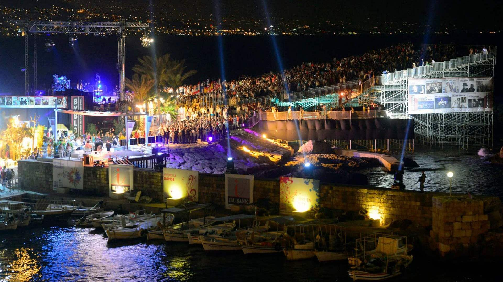
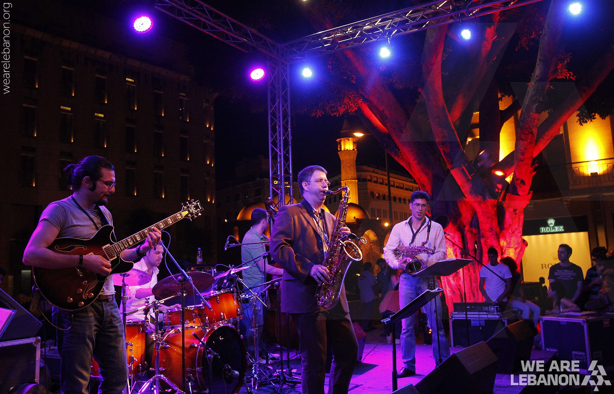
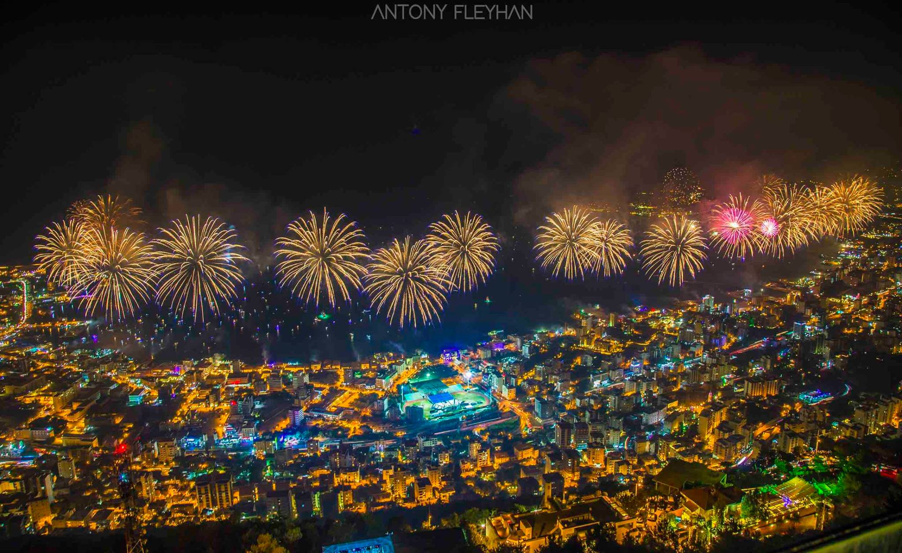
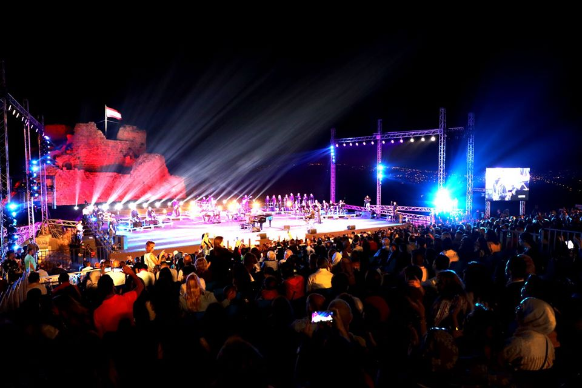
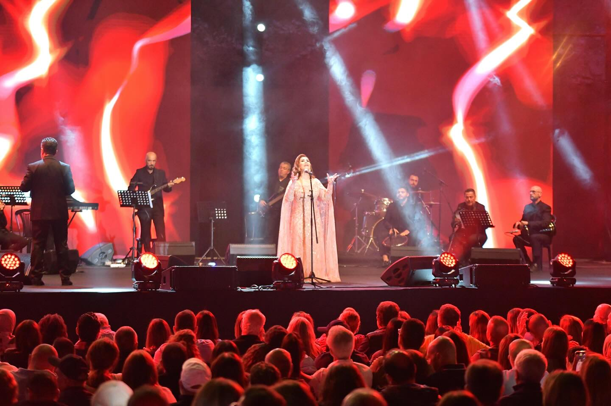

Ministry of Tourism Lebanon
DISCOVER LEBANON
Despite its small size, Lebanon hosts some of the most prestigious performing arts festivals in the Middle East. Many are staged in settings of extraordinary historical and natural beauty — Roman ruins, medieval castles, mountain villages, and ancient forests — giving them an atmosphere that purpose-built concert halls simply cannot replicate.
Lebanese festival culture is democratic and inclusive. Festivals here are not just for the elite — they spill into the streets, into village squares, and into the daily life of the communities that host them. They are occasions for national pride, cultural expression, and the kind of collective joy that Lebanon, despite everything, never loses its capacity for.
Summer is peak festival season, running from June through September, but festivals and cultural events continue year-round — making Lebanon a destination for arts and culture travelers in every month.


Lebanon's oldest and most prestigious festival, held against the colossal Roman temples of Baalbek. Since 1956 it has hosted legends including Ella Fitzgerald, Rudolf Nureyev, and Fairuz. The Temple of Bacchus serves as a natural stage unlike any other in the world.

Held within the ancient walls of Byblos — one of the world's oldest cities — this festival stages international and Arab pop, rock, and world music acts in a harbor setting of extraordinary atmosphere. The medieval Crusader walls form the backdrop for a stage set above the sea.

One of the Arab world's premier jazz events, bringing international and regional jazz artists to Beirut's finest venues each November. The festival celebrates Lebanon's deep connection to jazz — a genre that has been part of Beirut's cosmopolitan musical identity since the mid-20th century.

A beloved summer celebration held on the seafront of Jounieh Bay, combining live music performances with spectacular fireworks over the water. One of Lebanon's most joyful and accessible festivals, drawing large crowds of locals and visitors to celebrate summer on the Mediterranean.

Staged within and around the UNESCO Roman ruins of Tyre, this festival presents music, theatre, and cultural performances in one of Lebanon's most dramatic settings. The ancient hippodrome and Roman colonnades provide a backdrop that transforms every performance into an encounter with history.

Held in the cool mountain town of Ehden in the northern highlands, this festival presents Arabic and international music in an open-air setting surrounded by cedar and pine forests at 1,500 meters elevation. The mountain air, the setting, and the intimate scale give it a character entirely distinct from Lebanon's coastal festivals.
Lebanon's festival culture goes far beyond the main stage. It spills into the streets, souks, village squares, and the daily life of communities hosting it — offering visitors a full cultural immersion.
Dabke — Traditional Folk Dance
Lebanon's national folk dance — a powerful, rhythmic line dance performed at festivals, weddings, and village celebrations. Watching a professional dabke troupe perform outdoors is one of Lebanon's most energetic and joyful cultural experiences.
Street Theatre & Open-Air Performance
Beirut's festival fringe brings street theatre, puppet shows, spoken word, and performance art into public spaces, turning entire districts into open-air stages.
Craft Fairs & Artisan Markets
Most festivals include craft markets showcasing hand-embroidered textiles, ceramics, glasswork, olive oil soaps, and local food products — perfect for finding authentic Lebanese crafts and supporting local producers.
Festival Food Culture
From mezze spreads at VIP receptions to street food stalls at festival sites, eating at a Lebanese festival is a cultural experience — demonstrating Lebanon's extraordinary culinary tradition in its most celebratory form.
Nighttime Atmosphere
Many of Lebanon's greatest festival moments happen after dark — Roman temples glow under stage lighting, castles light up with fireworks, and the Mediterranean night turns outdoor performances into something genuinely magical.
Festival tourism is one of Lebanon's most powerful tools for attracting international visitors, supporting local economies, and projecting the country's cultural identity — especially in times when Lebanon needs that projection most.
01 — Attracting International Visitors
Lebanon's major festivals — particularly Baalbek and Beiteddine — attract visitors from across the Arab world, Europe, and the global Lebanese diaspora. Festival tourism brings high-spending visitors who might not otherwise choose Lebanon as a destination.
02 — Supporting Local Economies
Every festival generates significant economic activity in its host community — hotels, restaurants, transport, craft markets, and local suppliers all benefit. In smaller towns like Ehden and Beiteddine, the summer festival season is a major driver of the local economy.
03 — Preserving Cultural Heritage
Lebanese festivals actively preserve and celebrate artistic traditions — from dabke folk dance to Arabic classical music to traditional craft. They provide platforms for artists and audiences for art forms that might otherwise struggle to find visibility.
04 — Projecting Lebanon's Image
In a region where Lebanon's image is often shaped by crises, festivals project a story of creativity, beauty, resilience, and cultural sophistication. The Baalbek International Festival has done this since 1956 and continues today.
05 — Connecting the Diaspora
For Lebanese living abroad, festivals are a powerful reason to return. The summer festival season is part of diaspora life — a chance to share the country with children born elsewhere, and to feel Lebanese in the most joyful way possible.
06 — Lebanon's Resilience in Celebration
Lebanon has held festivals through wars, economic crises, and political upheaval. The Baalbek Festival persisted even during wartime. This refusal to stop celebrating is a statement about Lebanon's enduring commitment to beauty, art, and joy.
©2026 All Rights Reserved - Ministry of Tourism Lebanon